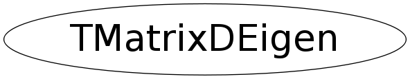

class TMatrixDEigen
TMatrixDEigen Eigenvalues and eigenvectors of a real matrix. If A is not symmetric, then the eigenvalue matrix D is block diagonal with the real eigenvalues in 1-by-1 blocks and any complex eigenvalues, a + i*b, in 2-by-2 blocks, [a, b; -b, a]. That is, if the complex eigenvalues look like u + iv . . . . . u - iv . . . a + ib . . a - ib . . . x . . . . . y then D looks like u v . . . . -v u . . . . a b -b a . . . x . . . . . y This keeps V a real matrix in both symmetric and non-symmetric cases, and A*V = V*D.
Function Members (Methods)
public:
| TMatrixDEigen() | |
| TMatrixDEigen(const TMatrixD& a) | |
| TMatrixDEigen(const TMatrixDEigen& another) | |
| virtual | ~TMatrixDEigen() |
| static TClass* | Class() |
| const TMatrixD | GetEigenValues() const |
| const TVectorD& | GetEigenValuesIm() const |
| const TVectorD& | GetEigenValuesRe() const |
| const TMatrixD& | GetEigenVectors() const |
| virtual TClass* | IsA() const |
| TMatrixDEigen& | operator=(const TMatrixDEigen& source) |
| virtual void | ShowMembers(TMemberInspector& insp) |
| virtual void | Streamer(TBuffer& b) |
| void | StreamerNVirtual(TBuffer& b) |
Class Charts
{kind=link}
{kind=link}
{kind=link}
{kind=link}

Function documentation
void MakeHessenBerg(TMatrixD& v, TVectorD& ortho, TMatrixD& H)
Nonsymmetric reduction to Hessenberg form. This is derived from the Algol procedures orthes and ortran, by Martin and Wilkinson, Handbook for Auto. Comp., Vol.ii-Linear Algebra, and the corresponding Fortran subroutines in EISPACK.
void MakeSchurr(TMatrixD& v, TVectorD& d, TVectorD& e, TMatrixD& H)
Nonsymmetric reduction from Hessenberg to real Schur form. This is derived from the Algol procedure hqr2, by Martin and Wilkinson, Handbook for Auto. Comp., Vol.ii-Linear Algebra, and the corresponding Fortran subroutine in EISPACK.
void Sort(TMatrixD& v, TVectorD& d, TVectorD& e)
Sort eigenvalues and corresponding vectors in descending order of Re^2+Im^2 of the complex eigenvalues .
const TMatrixD GetEigenValues() const
Computes the block diagonal eigenvalue matrix.
If the original matrix A is not symmetric, then the eigenvalue
matrix D is block diagonal with the real eigenvalues in 1-by-1
blocks and any complex eigenvalues,
a + i*b, in 2-by-2 blocks, [a, b; -b, a].
That is, if the complex eigenvalues look like
u + iv . . . . .
. u - iv . . . .
. . a + ib . . .
. . . a - ib . .
. . . . x .
. . . . . y
then D looks like
u v . . . .
-v u . . . .
. . a b . .
. . -b a . .
. . . . x .
. . . . . y
This keeps V a real matrix in both symmetric and non-symmetric
cases, and A*V = V*D.
Indexing:
If matrix A has the index/shape (rowLwb,rowUpb,rowLwb,rowUpb)
each eigen-vector must have the shape (rowLwb,rowUpb) .
For convinience, the column index of the eigen-vector matrix
also runs from rowLwb to rowUpb so that the returned matrix
has also index/shape (rowLwb,rowUpb,rowLwb,rowUpb) .
const TMatrixD & GetEigenVectors() const
If matrix A has shape (rowLwb,rowUpb,rowLwb,rowUpb), then each eigen-vector must have an index running between (rowLwb,rowUpb) . For convenience, the column index of the eigen-vector matrix also runs from rowLwb to rowUpb so that the returned matrix has also index/shape (rowLwb,rowUpb,rowLwb,rowUpb) . The same is true for the eigen-value vectors an matrix .
{ return fEigenVectors; }